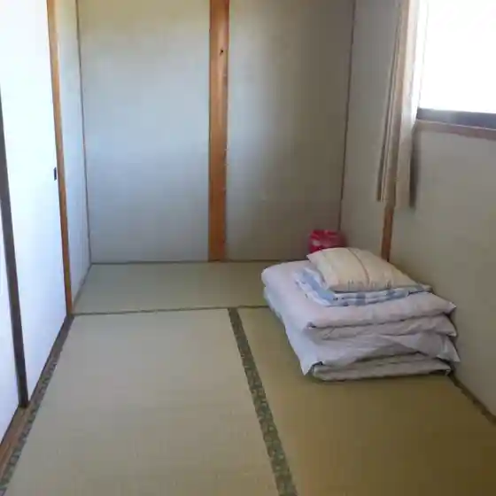

Japan / Okayama / Kumenan
Kumenan · Okayama
Kumenan
Highlighted on the Okayama map.
City / town / village site
Yumin Yado Tabi no Ashiato
Kumenan, Okayama · Official / source link

← Kibichuo · All towns in Okayama · Kurashiki →
Other towns: Akaiwa · Asakuchi · Bizen · Hayashima · Ibara · Kagamino · Kasaoka · Kibichuo · Kurashiki · Maniwa · Mimasaka · Misaki · Nagi · Niimi · Nishiawakura · Okayama · Satosho · Setouchi · Shinjo · Shoo · Soja · Takahashi · Tamano · Tsuyama · Wake · Yakage
Back to all prefectures